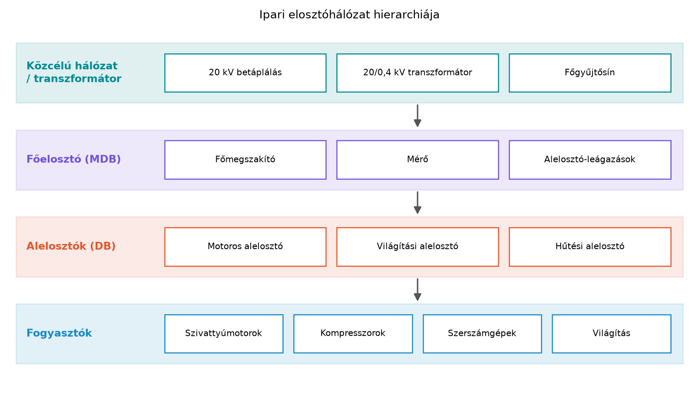
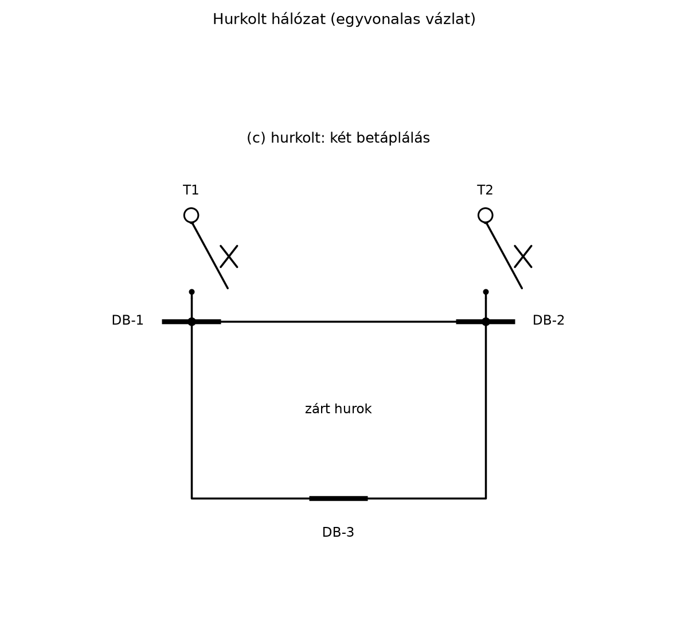

![Sugaras és nyitott gyűrűs ipari elosztóhálózat (egyvonalas vázlat) - (a) Sugaras: T1 – Q1 főmegszakító – gyűjtősín – Q2 → DB-A és Q3 → DB-B alelosztó; minden alelosztóhoz egyetlen út vezet. (b) Nyitott gyűrű: ugyanez, de DB-A és DB-B között a Q4 gyűrűkapcsoló is ott van, üzemszerűen NYITVA (a rajzon nyitott kapcsolóként). Ha például a DB-A betápláló kábele hibás, Q2 nyitva marad, és Q4 zárásával DB-A a Q3 – DB-B úton át táplálható. Q4 zárása előtt a reteszelést és a zárlati viszonyokat ellenőrizni kell.](assets/ve119-diagram-2.png)
Egy fémmegmunkáló üzemben a kompresszorház leágazásán rövidzárlat keletkezik. A leágazás megszakítója leold, de a főelosztó főmegszakítója is, ezért az egész csarnok feszültségmentessé válik. A termelés órákra leáll, a kemence lehűl, az automatika elveszti a paramétereit. A szerelő nemcsak a hibát javítja, hanem jogosan teszi fel a kérdést: miért okozott egyetlen leágazási hiba teljes üzemleállást? A válasz az ipari elosztóhálózat szerkezetében, védelmi kialakításában és a terhelés becslésében rejlik. Ebben az alfejezetben megismerjük az ipari elosztóhálózatok topológiáit, az egyidejűségi tényező szerepét, valamint a tartalék betáplálás és a megbízhatóság alapelveit, hogy a lakóépületi elosztóktól eltérő gondolkodásmódot kialakítsuk.
Az ipari elosztóhálózatot legkönnyebb rétegesen, a betáplálástól a fogyasztókig haladva elképzelni.

A rétegábra azt mutatja, hogy a közcélú hálózatból érkező energia először a főelosztóba (MDB, main distribution board), onnan az egyes alelosztókba, végül a fogyasztókhoz jut. A lakóépületi elosztóhoz képest itt több szint, nagyobb teljesítmény, több motoros fogyasztó és lényegesen nagyobb zárlati áram jelenik meg. A hibák hatása ezért egy-egy szinten túl is terjedhet, ha a védelmi láncot nem gondoljuk át.
Definíció. Az ipari elosztóhálózat a villamos energia elosztásának az a része, amely a betáplálási ponttól (például a transzformátor 0,4 kV-os kapcsaitól) az egyes fogyasztói leágazásokig vezet, beleértve a kapcsoló- és védelmi készülékeket, a gyűjtősíneket, a vezeték- vagy sínrendszereket és a csatlakozási pontokat.
Az ipari hálózat jellemzői a lakóépületi elosztókkal szemben:
A Szelektivitás, hátvédelem és megszakítóképesség alfejezetben tanult elvek itt teljesednek ki: egy ipari hálózatban a hibaelhárítás során nem elég a hibás leágazást kikapcsolni, hanem a lehető legkisebb üzemrészt szabad csak lekapcsolni.
A hálózat szerkezetét topológiának nevezzük. Három alapvető ipari elrendezést különböztetünk meg: a sugaras, a gyűrűs és a hurkolt hálózatot.
Definíció. Sugaras hálózat (radial feeder). Minden leágazás és fogyasztó csak egyetlen útvonalon kaphat táplálást. A betáplálástól a fogyasztókig nincs zárt kör, tehát a hálózati gráfban nincs hurok. Ha egy szakaszon hiba lép fel, az adott szakaszon túli összes fogyasztó feszültségmentessé válik.
Definíció. Gyűrűs hálózat (ring main). A fővezeték vagy az alelosztók betáplálása zárt gyűrűt alkot, de a gyűrűt üzemszerűen egy ponton nyitva hagyják (nyitott gyűrű). A gyűrű két végét ugyanahhoz a betápláláshoz vagy két különböző betápláláshoz csatlakoztatják. Hibás szakasz kikapcsolása után a gyűrűt átrendezve a fogyasztók nagy része továbbra is táplálható.
Definíció. Hurkolt hálózat (meshed network). Olyan hálózat, amelyben több, egymással összekapcsolt betáplálási út is létezik, tehát a fogyasztók több irányból is táplálhatók. A zárt hurkok miatt a rövidzárlati áram nagyobb, a védelmi szelektivitás bonyolultabb, ezért a kisfeszültségű ipari hálózatokban ritkábban alkalmazzák, mint a sugaras vagy a nyitott gyűrűs megoldást.
Az alábbi egyvonalas vázlatok a három topológiát a 4. feladat jelöléseivel mutatják. A sugaras hálózatban a T1 transzformátortól a Q1 főmegszakítón és a gyűjtősínen át a Q2 a DB-A, a Q3 a DB-B alelosztót táplálja, mindegyiket egyetlen úton. A nyitott gyűrűben a két alelosztót a Q4 gyűrűkapcsoló is összeköti, de ez üzemszerűen nyitva van, így a hálózat normál üzemben sugarasan működik; hiba után Q4 zárásával lehet áttáplálni. A hurkolt hálózatban két betáplálás (T1, T2) és három csomópont zárt hurkot alkot, minden csomópont két irányból is táplált.

A gyakorlati ipari hálózatok legtöbbször sugaras felépítésűek, de a fontos fogyasztóknál tartalék betáplálással vagy gyűrűs átrendezéssel növelik a rendelkezésre állást. A gyűrűs elrendezés akkor előnyös, ha a fogyasztók egy csarnokban, egy útvonal mentén helyezkednek el, és a kiesésük jelentős termelési kárt okoz.
Összefüggés. Minél több útvonalon juthat el az energia egy fogyasztóhoz, annál nagyobb a rendelkezésre állás, de annál nagyobb a zárlati áram és annál nehezebb a szelektív védelmi lánc kialakítása. A tervezés során tehát kompromisszumot kell kötni a megbízhatóság és a védhetőség között.
Az ipari hálózat méretezésének első lépése a várható terhelés becslése. A beépített teljesítmény önmagában nem elegendő, mert a fogyasztók nem mind egyszerre üzemelnek teljes terheléssel.
Definíció. Egyidejűségi tényező (angolul simultaneity vagy coincidence factor; vigyázat: a „diversity factor” szó egyes forrásokban ennek reciprokát jelenti, az MSZ EN 61439-ben pedig a kapcsolóberendezés névleges egyidejűségi tényezőjét – ellenőrizendő: a használt forrás definíciója). Az egyidejűségi tényező a csúcsidőben ténylegesen egyidejűleg felvett hatásos teljesítmény és az összes beépített névleges hatásos teljesítmény hányadosa:
ahol:
Motoroknál helyett a hálózatból felvett teljesítmények összegét, -t vesszük, mert az adattábla a tengelyen leadott teljesítményt adja; ellenállásos és egyéb fogyasztónál a névleges teljesítmény már a felvett teljesítmény.
Az egyidejűségi tényező értéke mindig . Lakóépületekben a lakások számától függően jellemzően kicsi (például 0,2–0,6), mert a háztartások fogyasztása időben eloszlik. Az iparban az érték üzemtől és technológiától függ: egy folyamatos üzemű szivattyútelepen közel lehet 1-hez, egy műhelyben viszont a gépek ritkán üzemelnek egyszerre, ezért 0,5–0,8 lehet. A konkrét értéket mindig a folyamatismeretből, a gyártói adatokból vagy a tervezési előírásokból kell meghatározni. (ellenőrizendő: az adott üzemre vonatkozó egyidejűségi tényező)
Kidolgozott példa – egyidejűségi tényező és betáplálási
áram.
Adott: egy műhelyben 5 db, egyenként 7,5 kW
tengelyteljesítményű (adattáblai, leadott) motor üzemel,
,
,
,
.
Keresett: a várható egyidejű csúcsteljesítmény és a
főelosztó betáplálási árama.
Képlet: a motor adattáblai
a tengelyen leadott teljesítmény, a hálózatból felvett hatásos
teljesítmény
;
így
,
majd
és
.
Behelyettesítés:
(tengelyteljesítmény)
(felvett)
Ellenőrzés: a visszaszámolt hatásos teljesítmény
,
ami egyezik a felvett csúcsteljesítménnyel (a hatásfok figyelmen kívül
hagyása az áramot 46,2 A-re, tehát mintegy 12 %-kal alábecsülné). A
főelosztóban legalább
szerint kell kismegszakítót választani, például 63 A-es készüléket
(),
a vezeték terhelhetőségétől függően. ∎
Figyelem. Az egyidejűségi tényezőt nem szabad automatikusan átvenni egy lakóépületi értékből. Egy ipari üzemben a terhelés jellege, a műszakok, az automatikus indítások és a folyamatirányítás miatt a akár 0,9 is lehet, ezért a hálózatot a valós folyamatra kell méretezni.
Az ipari hálózat tervezésénél a rendelkezésre állás és a termelésbiztonság alapvető szempont. A szelektivitás biztosítja, hogy a hibás szakasz leválasztása ne érintse a hibátlan részeket. A hátvédelem és a megszakítóképesség pedig azt garantálja, hogy a védelmi készülékek a fellépő zárlati áramot el tudják viselni.
Szabály. Az ipari létesítmények villamos berendezéseinek tervezésére és ellenőrzésére is az MSZ HD 60364 sorozat vonatkozik, kiegészítve a kapcsolóberendezésekre vonatkozó MSZ EN 61439 és a gépek villamos berendezéseire vonatkozó MSZ EN 60204-1 szabvánnyal. A hálózati csatlakozás feltételeit a helyi elosztói engedélyes írja elő. (ellenőrizendő: aktuális szabványszámok és hatályos követelmények)
Tartalék betáp (redundancia). Fontos fogyasztóknál gyakran két független betáplálást építenek ki: az egyik az üzemi, a másik a tartalék. A tartalék lehet egy másik transzformátorról, egy másik elosztói betáplálásról vagy szünetmentes áramforrásról (UPS) táplált ág. A két betáplálást mechanikus vagy villamos reteszeléssel kell ellátni, hogy soha ne járhassanak párhuzamosan, mert ez visszatáplálást, túlterhelést vagy hibás védelmi működést okozhat.
Az n–1 elv. A hálózat megbízhatóságának egyszerű megfogalmazása, hogy egy elem kiesésekor a rendszer még biztonságosan, ha nem is teljes kapacitással, de tovább üzemelhessen. Két transzformátoros üzemnél gyakran úgy méreteznek, hogy az egyik transzformátor kiesésekor a másik átvegye a fontos fogyasztókat, a nem fontos terheléseket pedig leválasztják.
Kidolgozott példa – n–1 elvű tartalék.
Adott: két transzformátor, egyenként 630 kVA; a
csúcsterhelés 780 kVA; a nem fontos fogyasztók (például
hűtőkompresszorok) összesített terhelése 120 kVA.
Keresett: ha az egyik transzformátor kiesik, elegendő-e
a másik kapacitása?
Képlet: a megmaradó transzformátor névleges
teljesítménye
,
a leválasztandó teljesítmény
,
ha
.
Behelyettesítés:
,
.
.
Ellenőrzés: a nem fontos fogyasztók összesen 120 kVA-t
tehetnek ki, ami önmagában nem elég, mert 150 kVA-t kell leválasztani.
Tehát további 30 kVA, például egy kevésbé fontos műhelyág lekapcsolására
is szükség van. Ez a tervezési szemlélet: a tartalék betáp nem
helyettesíti a teljes csúcsterhelést, hanem a folyamat szempontjából
fontos fogyasztókat tartja üzemben. ∎
Továbbvitt eredmény. Az itt kiválasztott topológia, a becsült egyidejű csúcsteljesítmény és a tartalék betáplálás igénye határozza meg, hogy a Síncsatorna, energiaoszlop, kábeltálca és kábelpadló alfejezetben milyen fizikai szerelési módot és útvonalat választunk.
A lakóépületi elosztó és az ipari elosztó közötti különbségeket a következő táblázat foglalja össze:
| Szempont | Lakóépületi elosztó | Ipari elosztóhálózat |
|---|---|---|
| Teljesítmény | néhány kW–tíz kW lakásonként | tíz kW–több MW |
| Fogyasztók jellege | világítás, dugaszoló aljzatok, háztartási gépek | motorok, hajtások, kemencék, hegesztők, automatika |
| Zárlati áram | jellemzően kicsi, 1,5–6 kA | nagy, akár 25–100 kA |
| Egyidejűségi tényező | lakások számával csökkenő, 0,2–0,6 | üzemfüggő, 0,5–1,0 |
| Topológia | legtöbbször sugaras, egy betáplálással | sugaras, gyűrűs vagy tartalék betáplálással |
| Védelem | kismegszakítók, FI-relék egyszerű láncban | megszakítók, motorvédők, szelektív és hátvédelmi koordináció |
| Megbízhatósági igény | a kényelmi és biztonsági igény a fontos | a termeléskiesés csökkentése, folyamatbiztonság |
| Dokumentáció | egyszerűbb egyvonalas rajz | részletes egyvonalas rajz, zárlati és terhelési számítások, védelmi beállítási táblázat |
A táblázatból látható, hogy az ipari hálózat tervezése nem egyszerű „nagyobb lakáselosztó”. A hibás méretezés vagy a rossz védelmi beállítás nemcsak a fogyasztókat, hanem az egész termelést veszélyezteti.
Egy csarnokhálózat átalakítása gyűrűssé. Egy élelmiszer-feldolgozó üzemben a hűtőkompresszorokat és a csomagológépeket egyetlen sugaras kábelrendszer táplálta. Egy földzárlat a csarnok közepén lévő alelosztóban leoldotta a főmegszakítót, így a teljes hűtőlánc leállt. A vizsgálat kimutatta, hogy a főmegszakító és az alelosztó leágazása között nem volt szelektivitás; ezt a főmegszakító késleltetett (rövid késleltetésű) beállításával javították (ellenőrizendő: gyártói adatlap, szelektivitási táblázat). A szerelő emellett azt javasolta, hogy a csarnok fogyasztóit két szakaszra bontva nyitott gyűrűként alakítsák ki: az egyik szakaszt a főelosztó A leágazása, a másikat a B leágazása táplálja. A két szakasz közé egy nyitott gyűrűkapcsolót helyeztek el. Ha az egyik betáplálás kiesik, a gyűrűkapcsolót zárva a másik betáplálás át tudja venni a fontos fogyasztókat. A védelmeket úgy állították be, hogy áttápláláskor (más útvonalon, más zárlati árammal) is szelektíven oldjanak le. A gyűrű a szelektivitási hibát nem orvosolja, csak a betáplálás kiesése utáni áttáplálást teszi lehetővé. Biztonsági korlát. A 230/400 V-os hálózaton és a kapcsolóberendezésen csak jogosult, arra képesített személy végezhet munkát.
Ez az eset jól mutatja a topológia és a védelmi koordináció együttes szerepét: a gyűrű lehetőséget ad az áttáplálásra, de a tervezésnél figyelembe kell venni a megnövekedett zárlati áramot és a gyűrűkapcsoló reteszelését.
1. hiba – Az ipari hálózatot lakóépületi egyidejűségi tényezővel méretezik. A szerelő a lakásoknál megszokott értéket alkalmazza egy műhelyre is, ahol a gépek a műszak kezdetén egyszerre indulnak. A betápláló kábelt alulméretezi, a főmegszakító túlterhelés miatt rendszeresen leold. Helyes gyakorlat: az egyidejűségi tényezőt a tényleges üzemvitelből, a technológiai sorrendből és a motorok indítási viszonyaiból kell meghatározni.
2. hiba – A gyűrűt állandóan zárva üzemeltetik. A gyűrűt azért nyitják meg egy ponton, hogy a hálózat sugarasan, egyszerűen védhető legyen. Ha a gyűrűt zárva hagyják, a rövidzárlati áram megnő, és a védelmek nem feltétlenül szelektívek, ezért egy hiba két irányból is táplálva nagyobb károkat okozhat. Helyes gyakorlat: a gyűrűt üzemszerűen nyitva kell hagyni, és csak a hiba elhárításához szükséges áttápláláskor szabad zárni.
3. hiba – A tartalék betáplálásnál nincs reteszelés. Ha a hálózati és a tartalékforrás együtt tud üzemelni, visszatáplálás jöhet létre, ami a hálózati dolgozókat veszélyeztetheti, és a védelmeket is megzavarhatja. Helyes gyakorlat: mechanikus vagy villamos reteszelést kell beépíteni, amely kizárja a párhuzamos üzemet.
1. feladat (A)
Sorold fel a három alapvető ipari elosztóhálózati topológiát, és egy-egy
mondatban jellemezd őket!
2. feladat (A)
Egy műhelyben 6 db 5,5 kW-os (tengelyteljesítményű) motor van. Az
egyidejűségi tényező
,
a motorok hatásfoka
,
.
Számítsd ki a hálózatból felvett becsült csúcsteljesítményt és a
látszólagos teljesítményt!
3. feladat (B)
Az előző feladat műhelyét 400 V-os, háromfázisú hálózat táplálja.
Határozd meg a betáplálási vonali áramot, majd ellenőrizd, hogy egy 32
A-es főmegszakító elegendő-e! Ha nem, mekkora névleges áramú
kismegszakítót javasolnál?
4. feladat (B)
Rajzold le szövegesen egy sugaras és egy nyitott gyűrűs hálózat
egyvonalas vázlatát! Jelöld be a betáplálást, a főmegszakítót és két
alelosztót! Magyarázd el, mi történik egy alelosztó betápláló kábelének
hibája esetén mindkét topológiában!
5. feladat (C)
Egy üzemet két 800 kVA-es transzformátor táplál. A csúcsterhelés 950
kVA, a nem fontos fogyasztók 200 kVA-t tesznek ki. Az egyik
transzformátor kiesik. Határozd meg, mennyi teljesítményt kell
leválasztani, és elegendő-e a nem fontos fogyasztók lekapcsolása!
6. feladat (D)
Egy üzemben a főelosztó és az alelosztó megszakítója is leold egy
rövidzárlatnál, pedig a hiba az alelosztó egyik leágazásában volt.
Milyen hálózati vagy védelmi beállítási hibára gyanakszol? Milyen
mérésekkel, dokumentumokkal ellenőriznéd a feltételezésed? (A mérést
jogosult személy végezheti!)
Önellenőrzés – válaszok
1. feladat (A)
A három topológia: sugaras, gyűrűs (nyitott), hurkolt. A sugaras
egyetlen útvonalat ad, a gyűrűs egy ponton nyitott zárt hurkot alkot, a
hurkolt több összekapcsolt utat tartalmaz.
2. feladat (A)
Adott:
,
(tengely),
,
,
.
Keresett:
(felvett),
.
Képlet:
,
.
Számítás:
;
;
.
Eredmény:
,
.
3. feladat (B)
Adott:
,
.
Keresett:
és a szükséges megszakító névleges árama.
Képlet:
.
Számítás:
.
Ellenőrzés: a 32 A-es főmegszakító nem elegendő, mert
;
az 50 A-es sem
(
sérülne), tehát legalább 63 A-es kismegszakító szükséges, a vezeték
terhelhetőségétől függően
().
4. feladat (B)
Szöveges rajz (rajzban lásd a Topológiák alszakasz
egyvonalas vázlatát):
- Sugaras: betáplálás → Q1 főmegszakító → gyűjtősín →
Q2 alelosztó A, Q3 alelosztó B. Mindkét alelosztó külön leágazáson,
egyetlen útvonalon.
- Nyitott gyűrűs: betáplálás → Q1 főmegszakító →
gyűjtősín → két leágazás: Q2 az A alelosztóhoz, Q3 a B alelosztóhoz. Az
A és B alelosztó között van egy nyitott Q4 gyűrűkapcsoló, tehát a gyűrű
üzemszerűen nyitott.
Hiba esetén: A sugarasnál, ha az A alelosztó betápláló
kábele hibás, az A alelosztó fogyasztói lekapcsolódnak, a B tovább
üzemel. A nyitott gyűrűsnél, ha az A betápláló kábel hibás, a Q2 leold,
és az A szakasz kiesik. Ezután a hibás kábelszakaszt mindkét végén
leválasztjuk (a Q2 nyitva marad és reteszeljük, az A alelosztó
betáplálási leválasztóját nyitjuk), és csak ezt követően zárjuk a Q4
gyűrűkapcsolót: így a B betáplálás felől az A alelosztó fontos
fogyasztói áttáplálhatók. Ha a Q4-et a még csatlakozó hibás kábelre
zárnánk, a B ág a zárlatra kapcsolna, és a teljes csarnok kiesne. A
kapcsolási sorrendet az üzem kapcsolási utasítása rögzíti, és csak
jogosult személy végezheti.
5. feladat (C)
Adott: két transzformátor, egyenként
;
csúcsterhelés
;
nem fontos fogyasztók
.
Keresett: a leválasztandó teljesítmény.
Képlet:
,
ha
.
Számítás:
.
Ellenőrzés: a nem fontos fogyasztók 200 kVA-je
leválasztható, és mivel
,
elegendő a nem fontos fogyasztók lekapcsolása. A megmaradó terhelés
,
ami a 800 kVA-es transzformátor kapacitása alatt van.
6. feladat (D)
A jelenség arra utal, hogy a főmegszakító és az alelosztó megszakítója
között nincs megfelelő szelektivitás. A feltételezés
ellenőrzése:
- Először a védelmi beállítási táblázatot és a gyártói dokumentációt
kell megnézni, hogy a két megszakító kioldási görbéje hogyan viszonyul
egymáshoz.
- Ezután a zárlati áram nagyságát kell meghatározni (például a mért
hurokimpedanciából,
).
Ha a zárlati áram mindkét megszakító pillanatkioldó tartományába esik,
akkor áramszelektivitás nem érvényesül.
- A hurokimpedancia-mérést üzemi feszültség alatt, az MSZ EN 61557-3
szerinti műszerrel, megfelelő CAT-kategóriájú mérőzsinórral és a
munkautasítás szerinti védőeszközökkel csak erre jogosult, képzett
személy végezheti (a szigetelésmérés ezzel szemben feszültségmentes
állapotban történik); a zárlati áramot a mért
-ből
számítjuk
().
(ellenőrizendő: aktuális szabványkiadás)
Megoldás: időszelektivitás beállítása a főmegszakítón,
vagy nagyobb kioldási tartományú, illetve késleltetett megszakító
választása, a gyártói adatokkal összehangolva.
Az ipari elosztóhálózat a betáplálástól a fogyasztókig vezető kapcsoló-, védelmi és vezetékrendszer, amely nagy teljesítménye, nagy zárlati árama és magas rendelkezésre állási igénye miatt eltér a lakóépületi elosztótól. Alapvető topológiái a sugaras, a nyitott gyűrűs és a hurkolt hálózat. A sugaras egyszerű, de egy hiba nagy üzemrészt lekapcsolhat; a gyűrűs áttáplálást tesz lehetővé, de a védelmi koordinációt gondosabban kell megtervezni. A terhelés becslésénél az egyidejűségi tényezőt képlettel vesszük figyelembe. A megbízhatóság növelésére tartalék betáplálást és n–1 elvű méretezést alkalmazunk, de a párhuzamos üzemet reteszeléssel mindig ki kell zárni. Továbbvitt eredmény. A kiválasztott topológia, a becsült egyidejű csúcsteljesítmény és a tartalék betáplálás igénye határozza meg a fizikai szerelési módokat a Síncsatorna, energiaoszlop, kábeltálca és kábelpadló alfejezetben.
A fejezet a villamos hálózatok klasszikus topológiai és teljesítményszámítási ismereteire épül, amelyek stabil tudásnak tekinthetők. A szabványi hivatkozások közül az MSZ HD 60364 sorozat, az MSZ EN 61439 és az MSZ EN 60204-1 aktuális kiadását, valamint a hálózati engedélyes csatlakozási feltételeit a felhasználás előtt ellenőrizni kell. Az egyidejűségi tényező konkrét számszerű értékei üzem- és folyamatfüggők, ezért azokat mindig az adott létesítményre vonatkozó tervezési adatokból vagy mérési tapasztalatokból kell meghatározni. A példákban szereplő áram- és teljesítményértékek tanulási célt szolgálnak, nem tervezési előírások. (ellenőrizendő: aktuális szabványkiadások, egyidejűségi tényezők, megszakítók kioldási adatai)